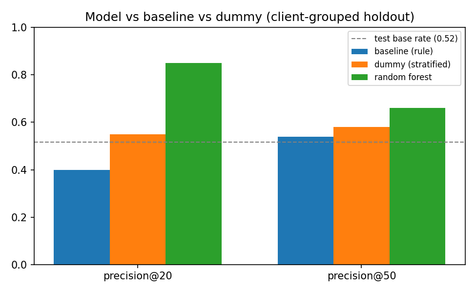
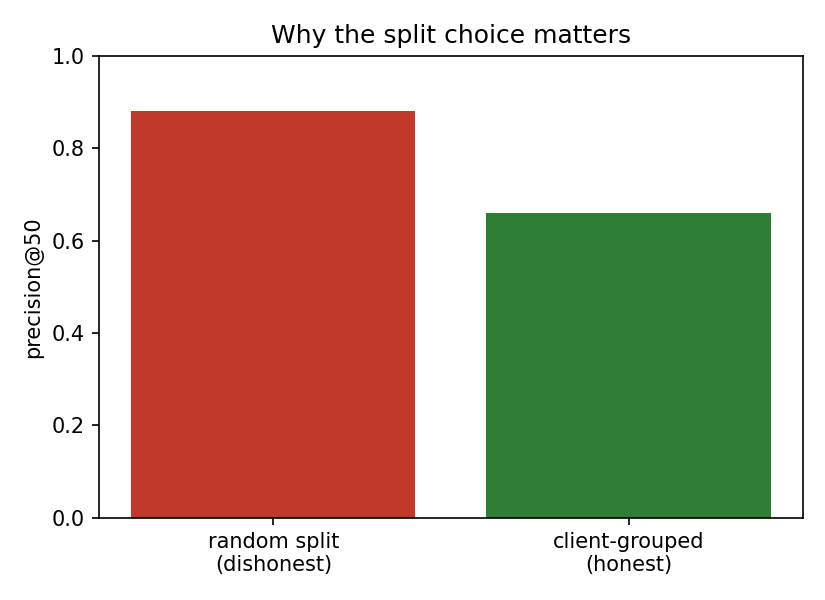
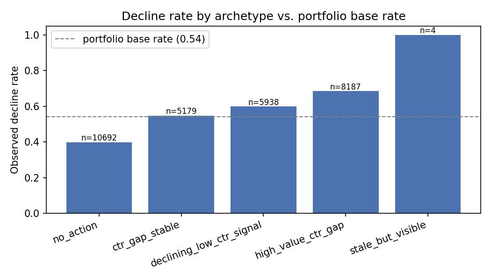

Introduction
A content team can't review every page every week. Someone has to decide which pages get an hour of attention first — and getting that wrong has a real, asymmetric cost.
Flagging a healthy page for review costs an editor an hour on the wrong page: annoying, but cheap. Missing a page that's genuinely declining, with real demand behind it, costs traffic that keeps compounding the longer it goes unnoticed. That asymmetry is the whole reason this project optimizes precision at the top of a ranked list rather than overall accuracy — and the reason it's worth checking whether a learned model actually earns its complexity over a rule a human can read in one line.
Data
This study uses the anonymized FlyRank ML Internship starter release: 30,000 pseudonymized content rows across 32 clients, one snapshot, with trailing-90-day search performance aggregates and static content metadata.
Fields used as features: content age, days since last update, 90-day impressions, average position, click-through rate, word count, and engagement rate — all observable before any editorial decision is made.
Deliberately excluded: the exact percentage the label is computed from. The label used throughout this study is derived from a 30-day-vs-previous-30-day impression comparison. Including that raw percentage as a feature would hand the model the answer — this isn't a theoretical risk, it's demonstrated directly in Section 4.
No client names, domains, raw search queries, or product/decision flags appear anywhere in this dataset, this report, or the underlying repository — IDs are opaque pseudonyms used only to group rows for a fair train/test split, never as model inputs.
Methodology
Baseline, checked before it was trusted. Two candidate signals were tested against real data before either was built into a rule. Staleness — the signal behind refresh flags — came back mixed: decline rate barely moved across staleness buckets (0.47–0.61 against a 0.542 base rate). CTR-vs-position — the signal behind CTR-fix logic — came back confirmed: weighted click-through rate drops sharply from 0.355 at page one to 0.055 in deep results, with solid sample sizes per tier. The baseline rule is built on the confirmed signal only.
| Rule | score = (expected CTR for position tier − actual CTR) × impressions | |
|---|---|---|
Model. A Random Forest classifier (300 trees, balanced class weights), chosen because this is fundamentally a ranking/scoring problem — "which pages first" — implemented via a classifier's probability output read as a priority score.
Validation design. Rows are split by client (GroupShuffleSplit,
75/25), not at random. A page's client is a strong hidden signal — its typical traffic
tier, niche, and update cadence — and a random split would let that leak across train
and test. Section 4 shows exactly how much that would have inflated the result.
Leakage check. The excluded percentage from Section 2 was deliberately added back in as a feature to confirm the exclusion actually matters: precision@50 jumps to a clean 1.000. That's the confession — proof the feature really does leak the answer, and proof the evaluation harness would catch it if it happened by accident.
Results
All three methods scored on the same held-out rows — 7,115 pages from 8 clients the model never trained on — at the same metric.
| Method | Precision@20 | Precision@50 |
|---|---|---|
| Baseline (rule) | 0.400 | 0.540 |
| Dummy (stratified) | 0.550 | 0.580 |
| Random Forest | 0.850 | 0.660 |

Test-set base rate is 0.517 — read every precision number against that, not in isolation. Precision@50 of 0.660 means roughly 33 of the top 50 flagged pages are genuinely declining by this study's label, on clients the model had never seen.
The split changes the number more than the model does. The same model, scored on a plain random row split instead of the client-grouped one, reports precision@50 of 0.880 — a full 0.22 higher than the honest number. That gap is a rough estimate of how much of the random-split score was the model recognizing which client a row belonged to, rather than genuinely reading decline.

Limitations & honest framing
- Proxy label, not an observed outcome. The decline label is a rule computed from the current window, not something that happened in the future. This study says pages look declining by this definition — never that they will decline.
- One snapshot, 8 held-out clients. Every precision number above comes from a single split of a 32-client panel — directional, not precise to the third decimal, and silent on any client outside this data.
- Observational, not causal. Nothing here supports "refreshing a page will increase its traffic" — that requires a controlled experiment this study doesn't run. The honest form is decision-support: this page looks worth reviewing first, because…
- The model may partly learn "weak page" rather than "declining page." Error analysis found false positives clustering among pages with poor position and near-zero CTR that are actually trending stable or up — a real, named failure mode.
- No claim anywhere in this study concerns Google's ranking algorithm. Every finding is scoped to this portfolio's own observed search performance.
Ranked recommendations
The validated model, scored honestly for every row with out-of-fold predictions (grouped by client, so no row is ever scored by a model that trained on it), combines with the baseline signal into four archetypes:
| Archetype | Action | Decline rate |
|---|---|---|
| high_value_ctr_gap | Review meta & snippet | 0.685 |
| declining_low_ctr_signal | Content refresh review | 0.599 |
| ctr_gap_stable | Monitor | 0.547 |
| stale_but_visible | Manual review | 1.000 (n=4 — too small to trust) |
| no_action | — | 0.399 |

What should never be automated: nothing in this queue triggers a content change on its own. Every entry is a recommendation to review, with a human check required before acting — including checking whether a CTR gap is actually caused by a competitor's rich result rather than a fixable title, and whether a flagged page is already recovering on its own.
Reproducibility
Every number on this page is generated by work/notebooks/capstone.ipynb in
the linked repository, with a fixed random seed (42) throughout.
- Full repository →
- capstone.ipynb →
- All weekly notebooks (
work/notebooks/w01–w07) documenting each step this study consolidates, from research question to action playbook.